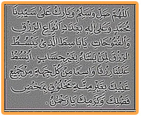

"Allahumma shalli wasallim wabarik 'alaa sayyidinaa Muhammadin wa'alaa 'aalihii bi'adadi anwaa'ir rizqi walfutuuhaati yaa baasithal ladzii yabsuthur rizqaliman yasyaau bighairi hisaabin ubsut 'alainaa rizqan waasi'an, minkulli jihatin minjamii'i ghaibika boghairi minnatin makhluuqin bimakhdhi fadhlika wakaramika yaa rahmaanu".
Artinya
Ya Allah anugerahkanlah rahmat serta keselamatan dan berkah kepada junjungan kita Nabi Muhammad SAW. dan juga atas keluarganya sebanyak bilangan rizqi dan pintu rizqi. Wahai Dzat yang menganugerahkan rizqi kepada siapa siapayang Dia kehendaki tanpa hitungan. Anugerahkanlah rizqi yang luas bagi kami dari setiap arah perbendaharaanMu yang ghaib dengan tiada makhluk lain yang mengundat-undat (karena iri hati) hanya karena anugerah dan kedermawananMu dan kemulyaanMu, wahai Dzat Yang Pemurah.
Fadhilah dan Khasiatnya
Bagi ihwan yang kehidupan ekonominya pas-pasan/sempit, dapat mengamalkan sholawat ini secara istiqomah, istiqomah ini penting karena untuk mengukur sampai di mana tingkat kesungguhan kita dalam berdoa. Tentu saja harus disertai keyakinan yang mantap Insya Allah akan diberikan kelapangan rizqi oleh Allah SWT dari arah yang tidak terduga, sebab Allah SWT Maha Pemberi Rizqi lagi maha Pemurah. Sholawat ini baik sekali dibaca 1.000 kali waktu tengah malam setelah shalat hajat, Semoga berhasil . Amin
Wallahu A’lam